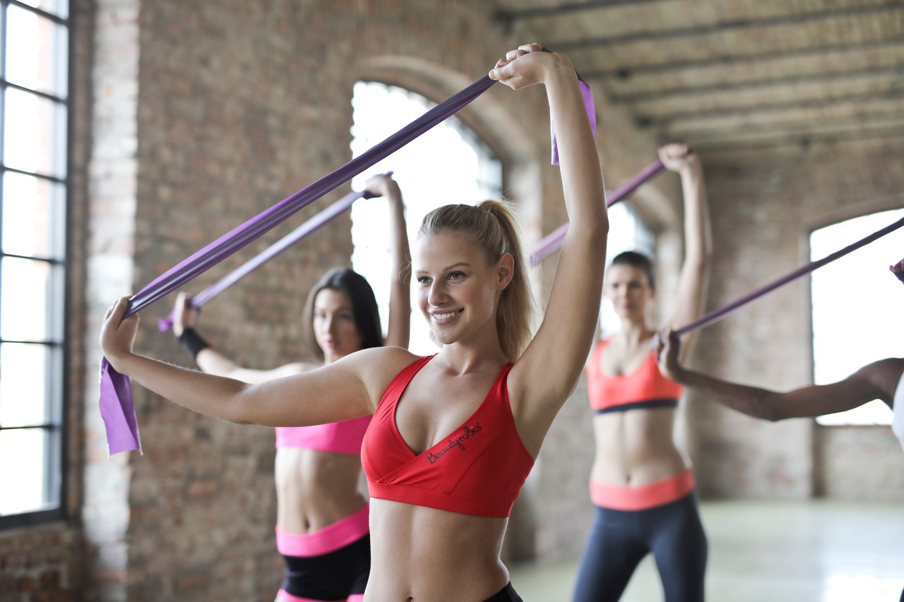

Élastiques de fitness : le guide pour bien choisir ses bandes de résistance

Après le tapis de sport, les élastiques sont probablement l'accessoire qui offre le meilleur rapport encombrement/utilité pour muscler tout le corps à la maison. Mais entre les élastiques plats, les tubes avec poignées, et les boucles courtes, il est facile de se tromper. Voici comment choisir sans se planter.
Pourquoi les élastiques valent le coup
Contrairement aux haltères, les élastiques ne prennent quasiment aucune place, ne font aucun bruit (utile en appartement), et permettent de travailler quasiment tous les groupes musculaires : jambes, fessiers, dos, épaules, bras.
- Prix très accessible comparé à un rack d'haltères complet
- Résistance progressive naturelle (plus tu étires, plus ça résiste) — bon pour le contrôle musculaire
- Rangement dans un tiroir, aucune contrainte d'espace
- Faible risque de blessure comparé à des charges lourdes, bon pour débuter
Les 3 types d'élastiques, et à quoi ils servent
1. Les bandes plates (type "booty band")
Des boucles courtes et plates, généralement portées autour des cuisses ou des chevilles. Idéales pour le travail des fessiers et des hanches (squats, montées de genoux, marche latérale). C'est souvent le premier achat pour qui débute le renforcement bas du corps à la maison.
2. Les tubes avec poignées
Des élastiques longs avec des poignées à chaque extrémité, parfois avec un point d'ancrage pour la porte. Ils remplacent en grande partie une poulie de salle de sport : tirage, développé, rowing. Le choix le plus polyvalent pour travailler le haut du corps.
3. Les bandes de résistance longues (type "power band")
De grandes boucles fines et longues, utilisées pour assister certains mouvements (tractions assistées) ou ajouter de la résistance à des mouvements au poids du corps (squats, pompes lestées). Plutôt pour un usage intermédiaire/avancé.
Comment choisir le bon niveau de résistance
Les élastiques sont classés par couleur selon leur résistance (le code couleur varie selon les marques, vérifie toujours l'indication en kg ou en livres plutôt que la couleur seule) :
- Résistance légère (environ 5-10 kg) — pour débuter, l'échauffement, ou le travail des petits muscles (épaules, rotateurs)
- Résistance moyenne (environ 10-20 kg) — le gros du travail pour la majorité des exercices une fois à l'aise
- Résistance forte (20 kg et plus) — pour les mouvements de bas du corps (les jambes sont naturellement plus fortes) ou une fois un niveau intermédiaire atteint
Le vrai conseil : commence par un set de plusieurs résistances plutôt qu'un seul élastique. Tu ajusteras selon l'exercice, pas l'inverse.
Notre sélection
Pour débuter (bas du corps)
Un set de bandes plates avec plusieurs niveaux de résistance, matière tissée plutôt que latex pur (moins de risque de rouler ou de glisser pendant l'effort).
Set de 3 à 5 bandes plates tissées, résistances progressives, avec sac de rangement.
Voir le produit →Pour le haut du corps
Un kit de tubes avec poignées et point d'ancrage de porte, permettant de couvrir tirage, développé, et rowing sans autre matériel.
Kit de tubes avec poignées, ancrage de porte inclus, plusieurs résistances.
Voir le produit →Le budget à prévoir
Un set complet correct (plusieurs bandes + tubes) se trouve généralement entre 15 et 30€. Pas besoin de viser plus cher pour débuter — la différence entre les gammes de prix se joue surtout sur la durabilité à long terme, pas sur l'efficacité immédiate.
Les erreurs à éviter
- Acheter un seul niveau de résistance — tu seras vite bloqué selon les exercices
- Négliger la matière — le latex pur fin roule et se déchire plus vite que les bandes tissées
- Utiliser une résistance trop forte trop vite — ça dégrade la forme d'exécution et augmente le risque de blessure
- Oublier de vérifier les points d'usure — inspecte régulièrement l'élastique avant utilisation, un latex fatigué peut casser sous tension
En résumé
Les élastiques sont l'un des meilleurs investissements pour démarrer le renforcement musculaire complet à la maison, pour un budget minime et un encombrement quasi nul. Vise un set multi-résistances, en matière tissée plutôt que latex fin, dans une fourchette de 15-30€.
Si tu n'as pas encore lu notre guide sur la tapis de sport ou sur la tenue adaptée, ce sont les deux autres bases à avoir avant de te lancer.
Cet article contient des liens affiliés Amazon. Si tu achètes via ces liens, je touche une petite commission, sans surcoût pour toi. Cela m'aide à continuer à créer du contenu gratuit.